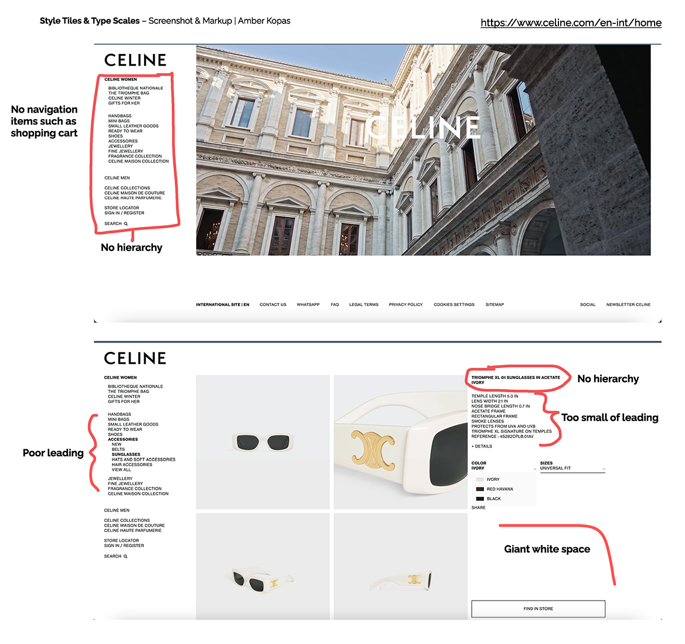
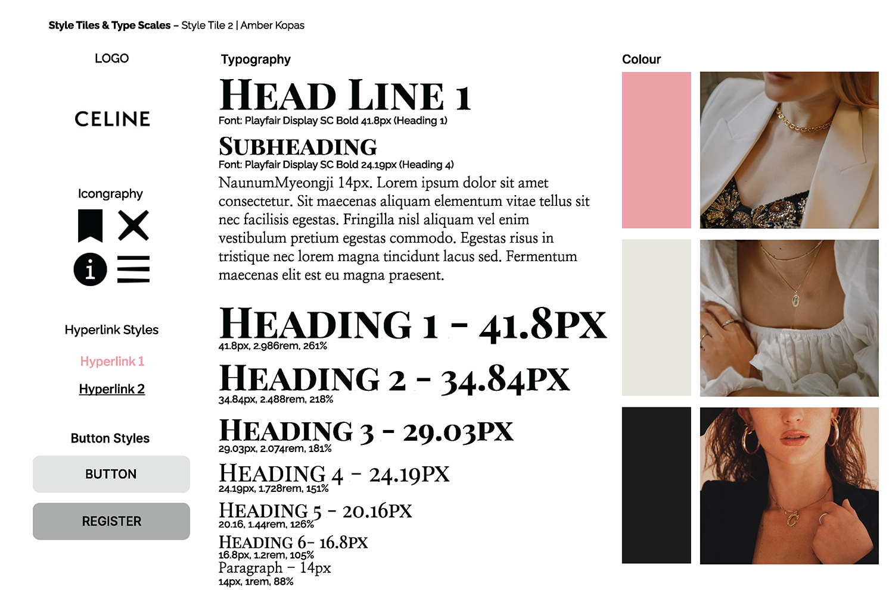
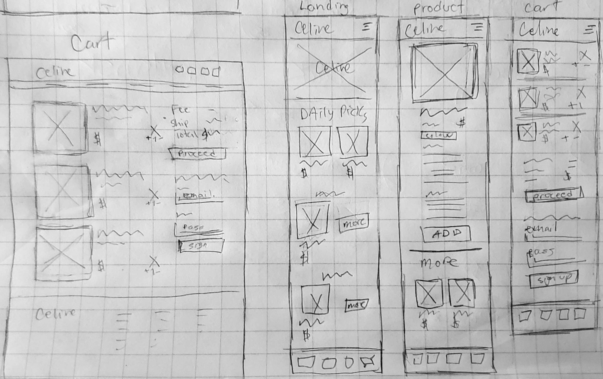
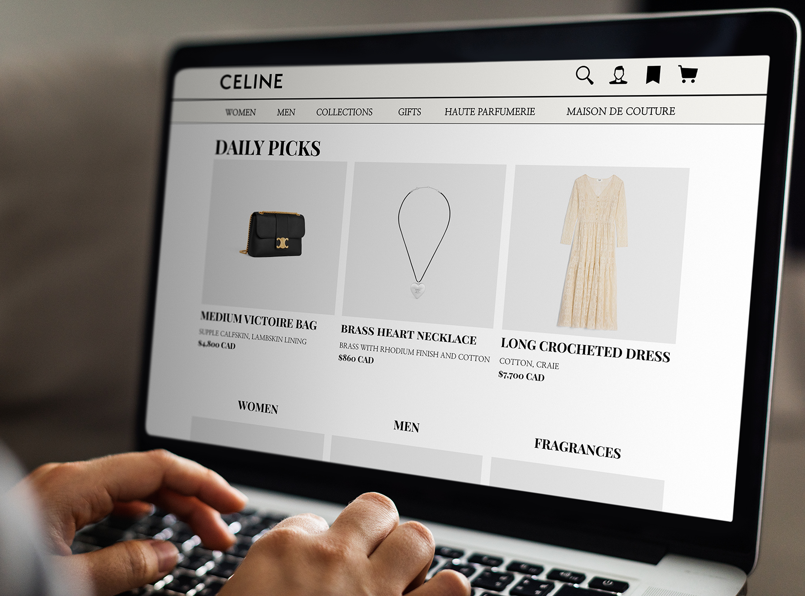
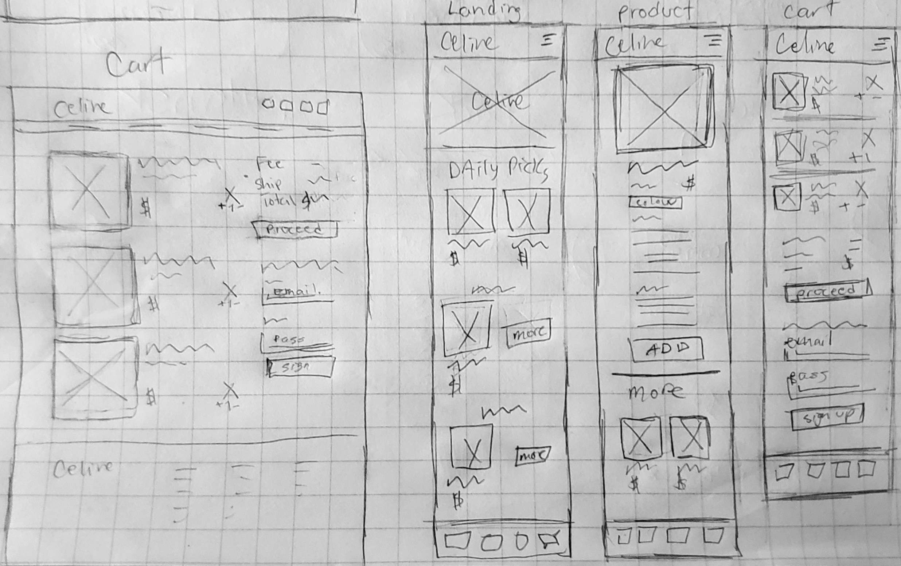
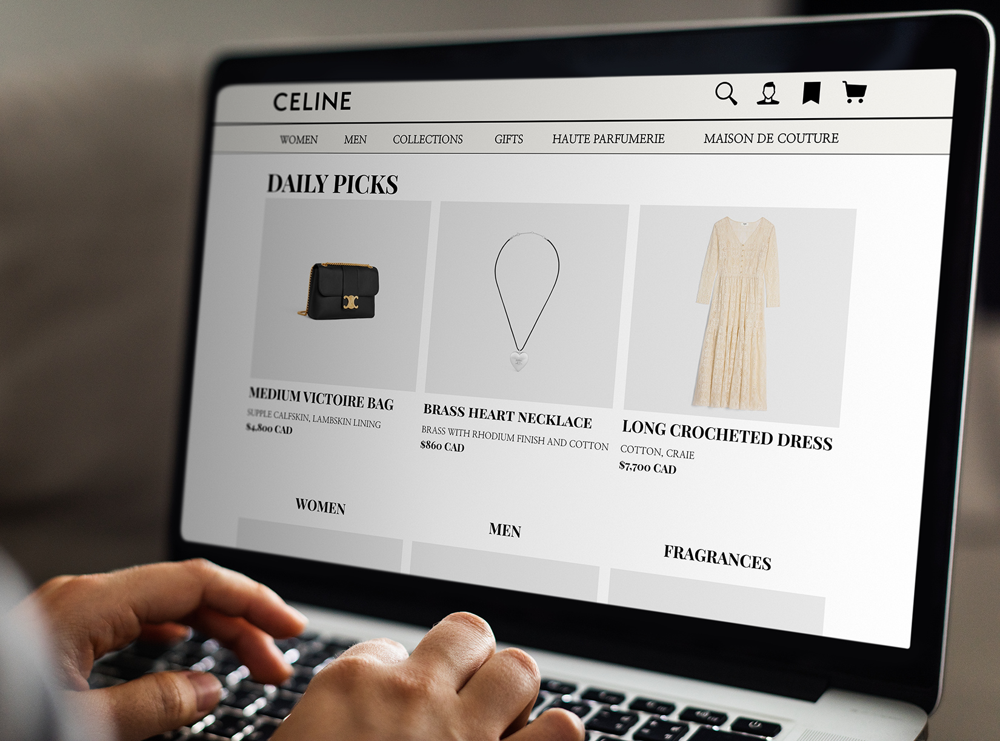
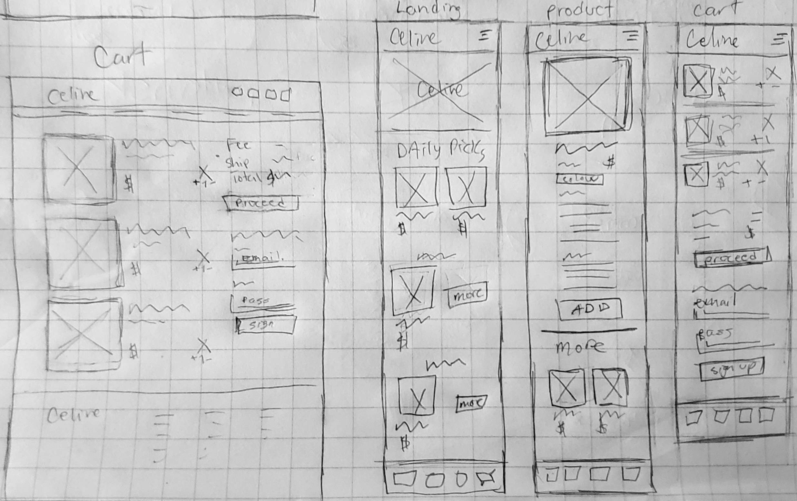
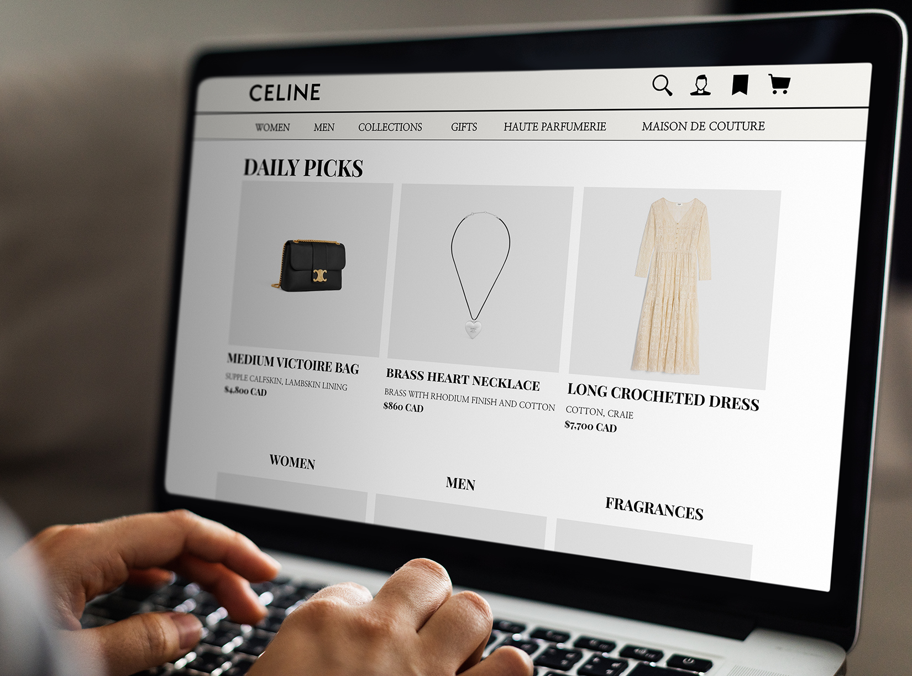
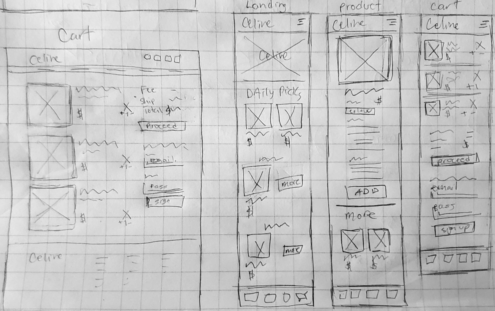
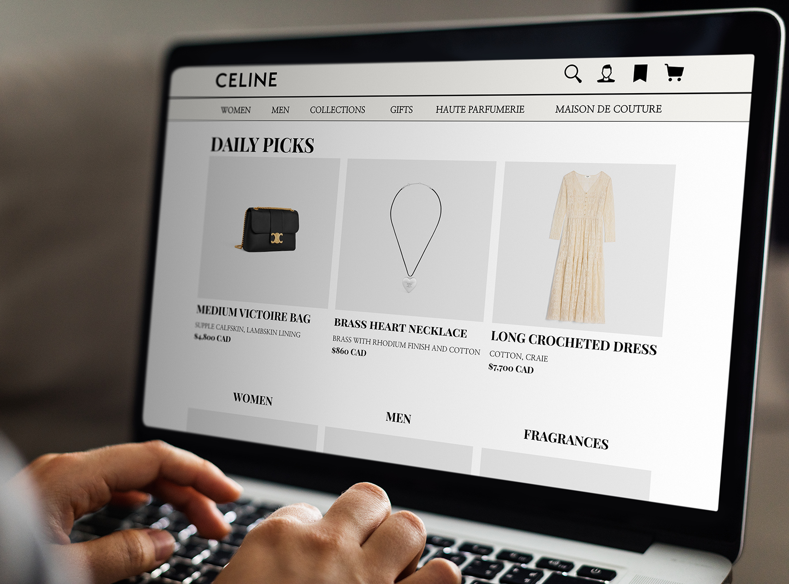

 






The goal of this project was to code a responsive re-design website for both web and mobile (and a style guide section). The challenge to follow was to pick a website that needed to be improved upon in anyway, and re-design it to enhance the users experience.
The strategy I followed was to first do a markup of the existing website, and pick out the different areas that could be improved or changed. The main aspect noted was to use better hierarchy to help the users flow through the website. Larger leading and bolder font styles allows for better legibility and more accessible for the visually disabled. After researching the brand and its products, I then created 3 personas and style tiles for each art direction. The takeaway of this project was learning how to use CMS and connecting it to the website. Re-designing and finally coding this website was a big project where I applied my new skills of CMS, and also continuing to build my HTML & CSS skills with being more efficient.
This project also has a style guide, see here

